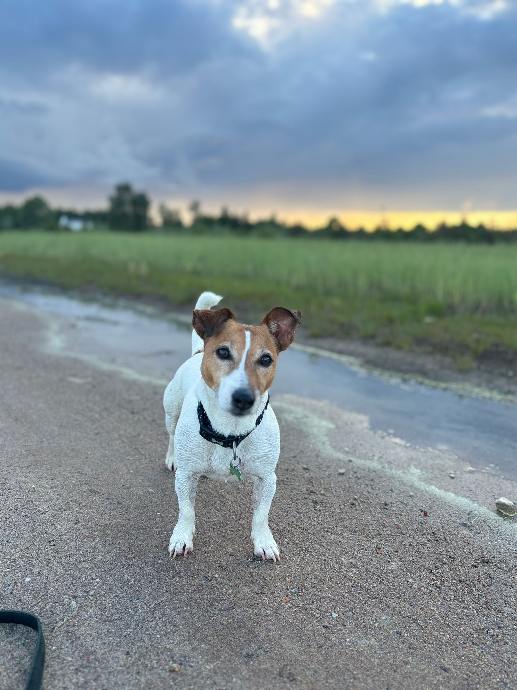

Poznaj Ayrę 🐾
O rasie
Jack Russell Terrier to niewielki, niezwykle zwinny pies myśliwski wywodzący się z Anglii. Rasa powstała w XIX wieku dzięki pastorowi Johnowi Russellowi, który hodował psy idealne do polowań na lisy.
Wysokość: 25–30 cm
Waga: 5–6 kg
Długość życia: 13–16 lat
Grupa FCI: III (Teriery)
Charakter i temperament
- Niespożyta energia: To pies stworzony do ruchu, długich spacerów, biegania i psich sportów (np. agility).
- Wysoka inteligencja: Szybko się uczy, ale wymaga konsekwentnego wychowania i stymulacji umysłowej (zabawki węchowe, sztuczki).
- Odwaga i czujność: Jako terier jest pewny siebie, odważny i bardzo przywiązany do swojego opiekuna.
Pielęgnacja i rodzaje sierści
Występują trzy odmiany szaty: gładkowłosa, szorstkowłosa oraz złamana (broken). Sierść jest łatwa w utrzymaniu – wymaga regularnego wyczesywania, a w przypadku odmian szorstkowłosych także okresowego trymowania.